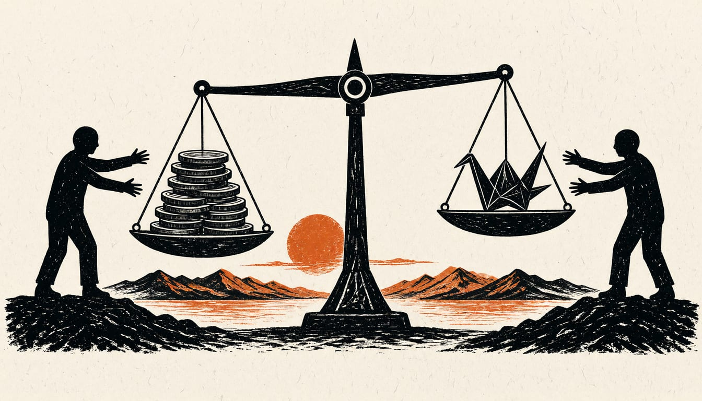

Japan plans around 60 trillion yen defence spending for fiscal 2027 to 2031
China calls the plan a push to remilitarise Japan. Tokyo says its defence posture stays exclusively defensive.

Yahoo reported that Japan's government is coordinating security-related documents to set total defence spending for the five years from fiscal 2027 at around 60 trillion yen.
Prime Minister Sanae Takaichi said on 17 December that the government aims for a settlement that is not a new increase in household burdens. Reports say Japan would keep labelling China its greatest strategic challenge in the revised documents.
Chinese defence ministry spokesperson Senior Colonel Chen Xi said Japan's right-wing forces keep fabricating the so-called China threat, twisting facts to portray Japan as a victim. He said Japan was accelerating defence spending, building offensive and long-range strike capability, and trying to loosen nuclear limits. The moves, he said, betray Japan's commitment to peace, challenge the postwar order and the nuclear non-proliferation treaty. He called on the world to stay highly vigilant and take countermeasures against Japan's push for remilitarization.
Japan has taken the row to the United Nations. Ambassador YAMAZAKI Kazuyuki, Japan's permanent representative, sent UN Secretary-General António Guterres a letter on 24 November answering China's letter about Japan. He asked for it to be circulated as an official General Assembly document under agenda item 120. Japan said China's assertions about Japan appear inconsistent with the facts and unsubstantiated. Japan stated its fundamental defence policy remains an exclusively defence-oriented posture of passive defence strategy, contrary to China's claims.
The revision work has started. Ruling-party officials from the Liberal Democratic Party and the Japan Innovation Party opened working-level talks on the three security documents on 11 November, Jiji reported. A senior government official said the same day that nuclear weapons should be allowed into Japan in emergencies.